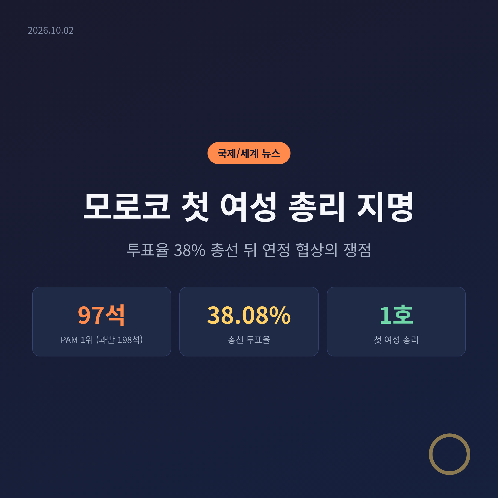
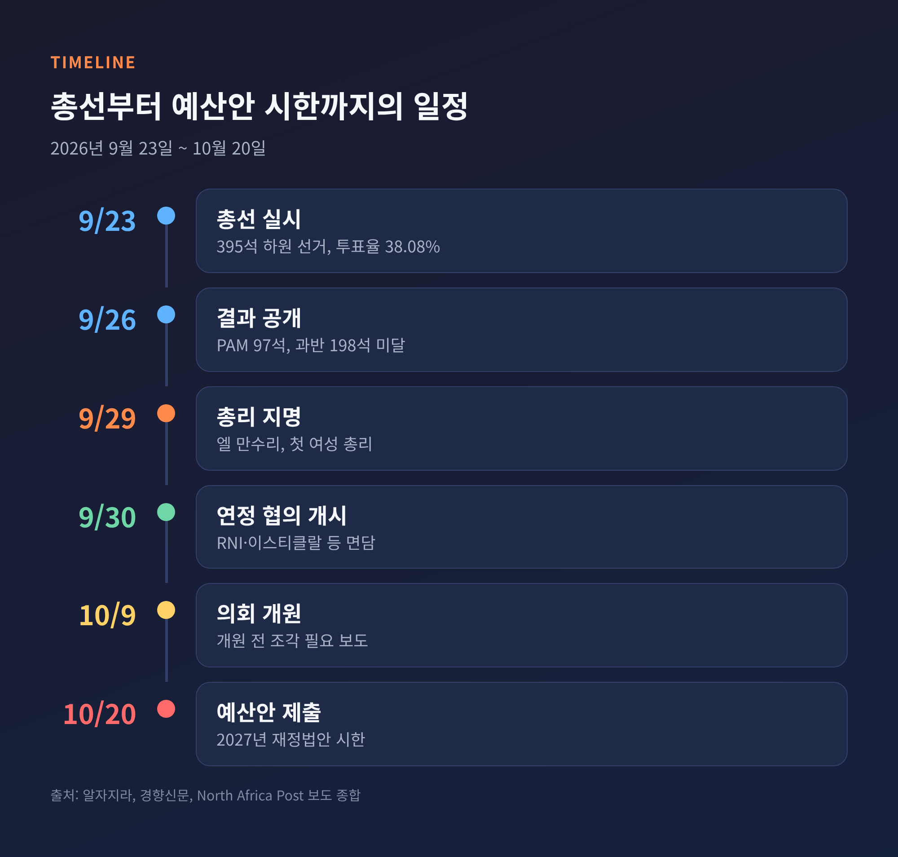
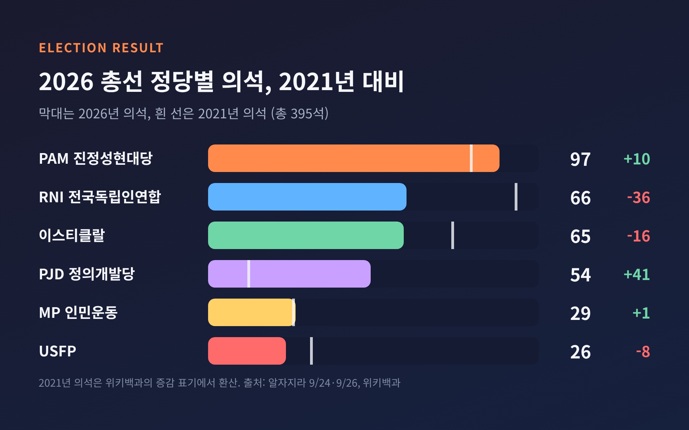
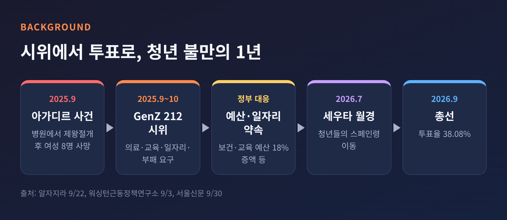
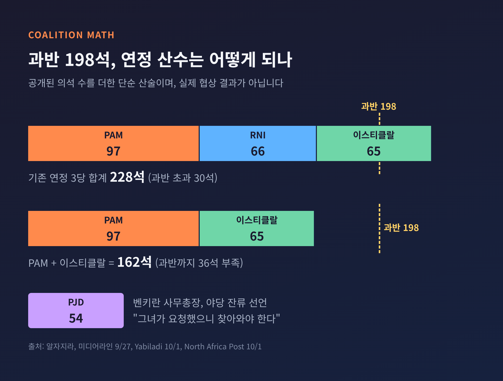
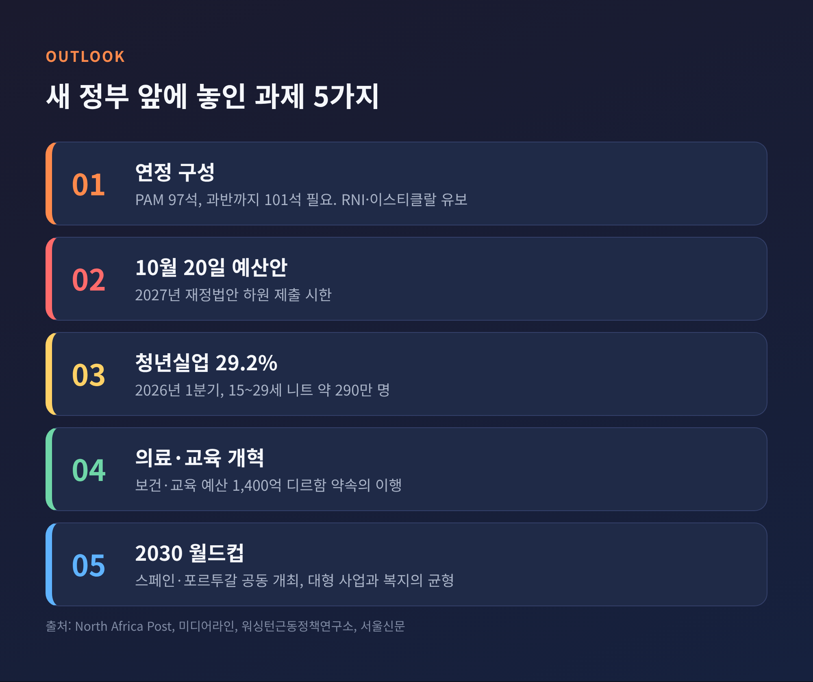

오늘은 2026년 9월 29일 모로코 국왕이 지명한 첫 여성 총리와 그 뒤에 이어진 연정 협상을 정리해 보려 합니다. 무슨 일이 있었는지, 왜 이 선거가 청년 세대의 불만과 맞닿아 있는지, 앞으로 무엇이 관건인지를 차례로 살펴보겠습니다. 지지하는 쪽과 비판하는 쪽의 시각을 함께 담았습니다.
세 줄 요약
모로코 하원 총선은 2026년 9월 23일에 치러졌습니다. 의석은 모두 395석이고, 정당명부 비례대표제로 뽑습니다. 결과는 PAM 97석, 전국독립인연합(RNI) 66석, 이스티클랄 65석, 정의개발당(PJD) 54석 순이었습니다.
엿새 뒤인 9월 29일 국왕이 엘 만수리를 총리로 지명했습니다. 모로코 헌법은 최다 의석 정당에서 총리를 고르도록 하고 있습니다. 그는 1976년 마라케시에서 태어난 변호사입니다. 프랑스 몽펠리에대와 미국 뉴욕대에서 공부했고, 2009년 33세에 마라케시 첫 여성 시장이 되었습니다. 2021년에는 국토정비·주택 장관을 맡았습니다.
본인은 "이것은 정말 역사적인 순간"이라고 밝혔습니다. UPI는 "모든 여성의 자부심"이라는 그의 말도 전했습니다.
다만 이 지명이 예상된 수순은 아니었습니다. UPI는 뉴욕타임스를 인용해, 2030 월드컵 준비를 총괄할 재무장관 푸지 레크자가 유력하게 거론됐다고 전했습니다.

첫 여성 총리라는 상징성은 분명합니다. 아랍권 여성 정부 수반의 순번을 두고는 보도가 엇갈립니다. 경향신문과 천지일보는 튀니지의 나즐라 부덴에 이은 '두 번째'라고 썼고, 알자지라와 UPI는 튀니지의 사라 자파라니 젠지리까지 포함해 '세 번째'라고 보도했습니다. 어느 쪽이든 아랍권에서 드문 장면이라는 점은 같습니다.
그러나 축하 분위기만으로 읽기에는 숫자가 무겁습니다. 투표율은 38.08%로, 2021년의 50.86%보다 12.78%포인트 낮았습니다. 알자지라에 따르면 2007년의 37%에 이어 국왕 재위 기간 두 번째로 낮은 수치입니다. 등록 유권자가 약 1,580만 명인데, 투표 가능 연령 인구는 2,670만 명이었습니다(미디어라인). 투표장에 나가기 전부터 제도권 밖에 있는 사람이 많다는 뜻입니다.

이번 선거를 이해하려면 2025년 9월로 돌아가야 합니다. 그달 27일 'GenZ 212' 시위가 시작됐습니다. 아가디르의 공공병원에서 제왕절개를 받은 여성 8명이 숨진 사건이 도화선이었습니다. 지도부 없이 디스코드와 틱톡, 인스타그램으로 모인 청년들은 의료·교육 개선, 일자리, 부패 척결을 요구했습니다. 알자지라는 2025년 10월 소요 과정에서 최소 3명이 숨졌다고 전했습니다.
정부도 손을 놓고 있지는 않았습니다. 워싱턴근동정책연구소에 따르면 정부는 보건·교육 예산을 18% 늘려 1,400억 디르함(약 150억 달러)으로 하고, 보건 일자리 8,000개와 교육 일자리 19,000개, 병원 90곳 개보수를 약속했습니다. 35세 미만 후보에게는 선거비용의 75%를 지원했습니다.
그럼에도 체감은 달랐습니다. 필수 건강보험이 있지만 2024년 본인 부담은 총비용의 평균 34%였습니다. 청년실업률은 2026년 1분기 29.2%였고, 15~29세 중 학업·취업·훈련 중이 아닌 인구가 약 290만 명입니다(미디어라인). 올해 7월에는 청년들이 스페인령 세우타로 대거 넘어간 일도 있었습니다.
한 청년은 알자지라에 "선거는 백지수표가 아니다"라고 말했습니다. 그 말대로 표를 줄 테니 약속을 지키라는 요구가 컸고, 동시에 투표 자체를 포기한 사람도 많았습니다. 18~24세는 등록 유권자의 3~4%에 그칩니다. 자료마다 3%와 4%로 달라 범위로 적습니다.

PAM의 97석에 필요한 것은 101석입니다. 과반이 198석이기 때문입니다. 기존 연정을 이룬 RNI(66석), 이스티클랄(65석)과 PAM을 합치면 228석으로 계산됩니다. 미디어라인은 세 정당이 직전 정부를 구성했다고 짚었습니다. 다만 같은 보도는 PAM이 RNI와 다시 손잡는 데 소극적이라고 전했는데, 이는 단일 출처여서 확인이 필요합니다.
엘 만수리는 9월 30일부터 라바트 PAM 본부에서 협의를 시작했습니다. RNI, 이스티클랄, 인민운동, USFP, 진보사회당 지도부가 오갔습니다. PAM 측은 "의회 교섭단체가 있는 모든 정당과 협의하겠다"고 밝혔습니다. RNI와 이스티클랄은 내부 논의가 필요하다며 참여 여부를 유보했고, 이스티클랄은 전국위원회가 결정합니다.
가장 눈에 띄는 쪽은 PJD입니다. 2016년 125석으로 정점을 찍은 뒤 2021년 13석까지 추락했다가 이번에 54석으로 돌아왔습니다. 사무총장 압델일라 벤키란은 이미 야당에 남기로 했다고 못 박았고, PAM 본부로 오라는 요청에 "그녀가 만나자고 했으니 그녀가 찾아와야 한다"는 취지로 응수했습니다. 알자지라에 따르면 좌파민주연합도 야당 입장을 밝혔습니다.
양쪽 시각은 이렇게 갈립니다. 지지하는 쪽은 여성의 정치 참여를 넓히는 이정표이며, 오랜 행정 경험을 가진 인물이라고 평가합니다. 마라케시 유대인 공동체 지도자는 ynet에 "그녀는 국왕의 길을 따를 것"이라고 말했습니다. 비판하는 쪽은 투표율이 낮은 선거에서 왕실과 가까운 정당이 1위를 차지했다는 점을 지적합니다. 서울신문은 엘리트 가문 출신이라는 비판과 가족 부동산 이해충돌 의혹도 전했는데, 이 부분은 단일 출처이므로 신중히 읽으셔야 합니다.

가장 가까운 시험대는 예산입니다. 2027년 재정법안은 늦어도 10월 20일까지 하원에 제출해야 합니다. 2021년에는 지명부터 조각까지 거의 한 달이 걸렸다고 PAM 스스로 언급했습니다. 이번에는 그만한 여유가 없습니다. 경향신문은 의회가 10월 9일 개원한다고 전했습니다.
더 긴 시험은 약속의 이행입니다. 한 서울신문 보도는 5년 안에 성장률 5%, 물가 2%, 일자리 100만 개를 내걸었다고 했습니다. 이 기사에는 선거 시기 등 오류도 보여 수치는 참고만 하시길 권합니다. 워싱턴근동정책연구소는 구조적 제약과 정치적 의지 부족 탓에 서비스 개선이 더딜 것이라고 내다봤습니다. 서사하라나 가자 문제 같은 외교 사안은 국왕이 쥐고 있어, 총선 결과와 무관하게 바뀌지 않을 가능성이 크다고도 분석했습니다.
2030 월드컵도 변수입니다. 스페인, 포르투갈과 공동 개최하는 대회를 앞두고 경기장 건설이 한창입니다. 대형 사업 지출이 의료·교육 투자와 경쟁하게 되면 시위의 불씨가 다시 살아날 수 있습니다.

정리하면 이렇습니다. 첫 여성 총리라는 역사적 장면과 38%라는 투표율은 같은 날 같은 나라의 두 얼굴입니다.
"상징은 출발점이고, 신뢰는 약속의 이행으로 얻는 것"입니다.
이 정부가 청년들의 요구에 어떤 답을 내놓을지는 이제 연정의 모양과 첫 예산안에서 드러날 것입니다. 한 달 뒤 같은 질문을 던진다면, 숫자가 먼저 대답해 줄 것이라고 생각합니다.